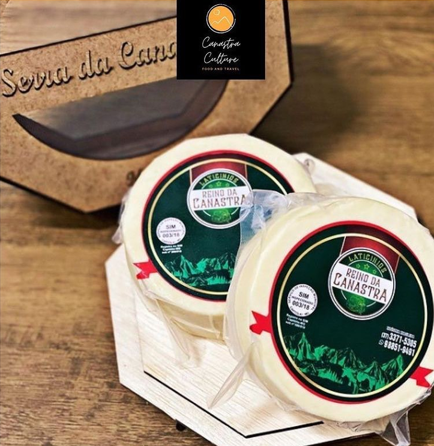
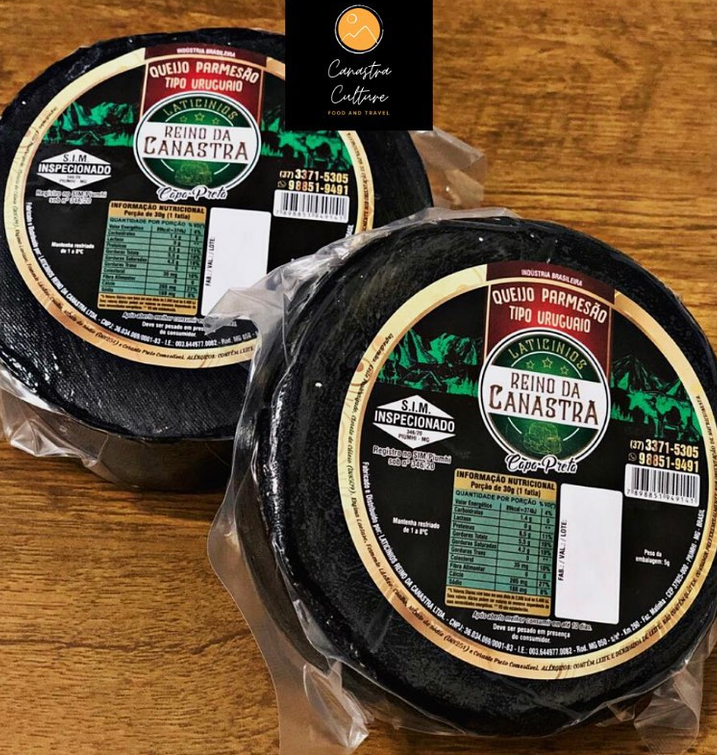
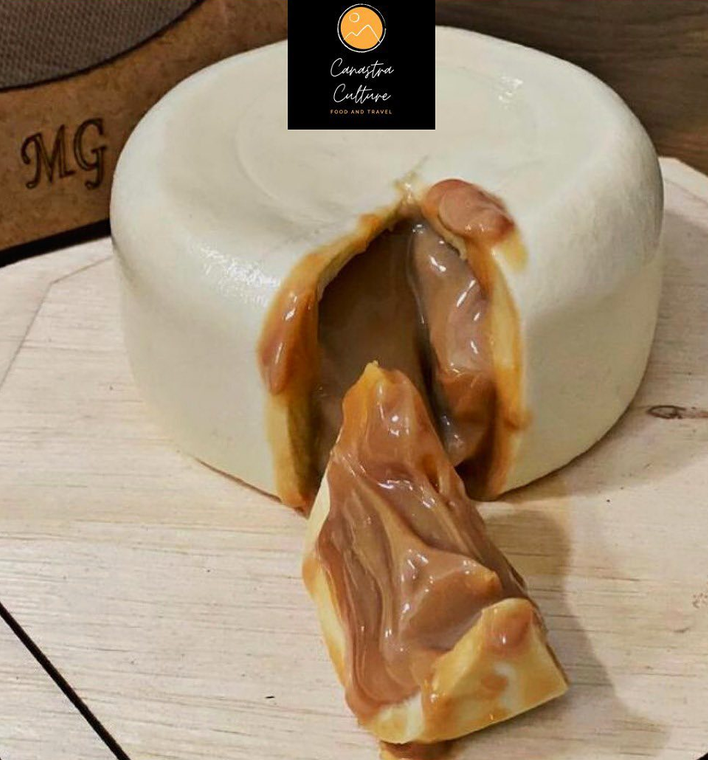

Sobre nós
Queijo bom não precisa de explicação, só de uma tábua, uma faca e boa companhia. A Canastra Culture é isso: queijos que a gente gosta de comer e de indicar, inspirados na tradição da Serra da Canastra. Muito cliente que chegou pra comprar queijo acabou ficando pela conversa.
Alguns de nossos queijos deliciosos

Queijo Parmesão
Ideal pra acompanhar um bom papo regado a vinhos tintos ou cervejas artesanais.
R$ 45,00 / 600g

Queijo Uruguaio
Pode ser consumido in natura, para gratinar, em molhos e de muitas outras formas... Sempre uma delícia!!!
R$ 49,00 / 600g

Queijo Trufado de Doce de Leite
Este é o queridinho dos nossos clientes. Juntando duas grandes paixões culinárias dos mineiros que é o queijo com o doce de leite, apresentamos a vocês o redondo mais gostoso do pedaço.
R$ 55,00 / 700g
Fale com a gente
Não sabe qual queijo levar? Conta pra gente a ocasião que a gente indica.
Chamar no WhatsApp